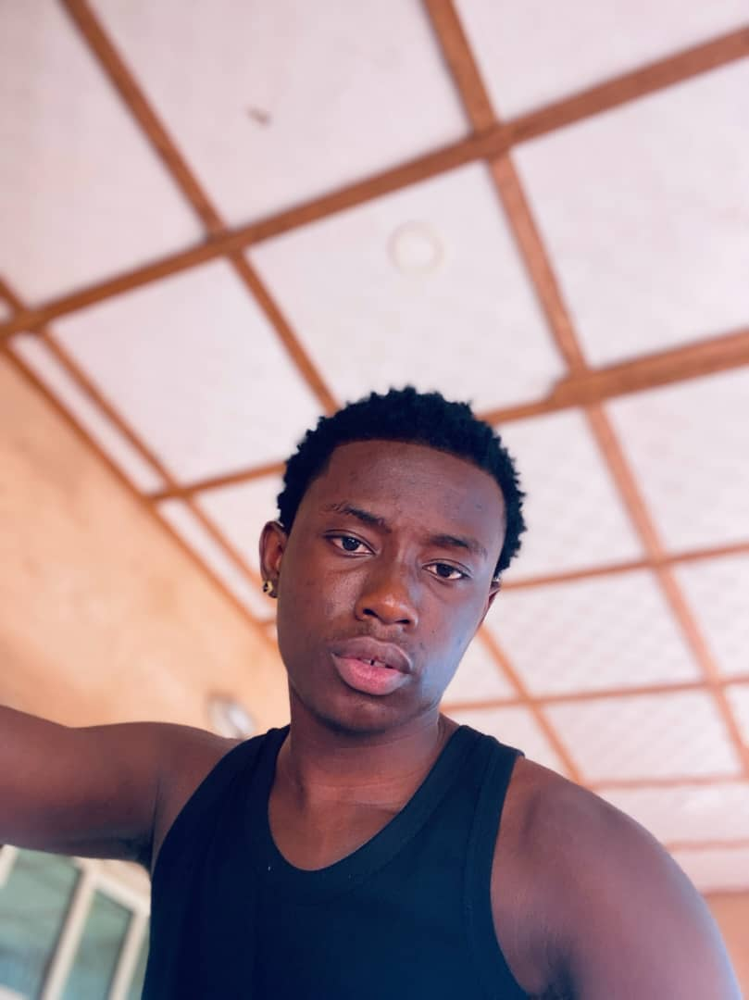

I am Felix Prince, a young Nigerian from Anambra State. I have completed secondary school, where Basic Science was my favourite subject because I enjoy understanding how things work. Outside the classroom I love playing and watching football, and I enjoy travelling to see new places and meet new people. I am working hard to learn technology skills so that I can build digital solutions that make life easier for people in my community and beyond.